របៀបប្រើប្រាស់ប្រព័ន្ធ
ការណែនាំពេញលេញសម្រាប់ការប្រើប្រាស់ប្រព័ន្ធចាប់យកថ្នាំស្វ័យប្រវត្តិ
ចាប់ផ្ដើមពីការភ្ជាប់ WiFi រហូតដល់ការចាប់ថ្នាំ ការគ្រប់គ្រងស្តុក និងការមើលប្រវត្តិនៃការចាប់យកថ្នាំ។
ការចាប់ផ្តើម
ភ្ជាប់ និងបើកកម្មវិធីការចាប់ថ្នាំ
កម្ម៉ង់ និងចាប់ថ្នាំគ្រប់គ្រងស្តុក
ចូល និងកែប្រែស្តុកប្រវត្តិ
កំណត់ត្រា និងសរុបតារាងថ្នាំ
ទីតាំងថ្នាំabout
ទីតាំងថ្នាំការចាប់ផ្តើម
ភ្ជាប់ទៅម៉ាស៊ីន និងបើកកម្មវិធីគេហទំព័រ
បើកម៉ាស៊ីន
បើកប្រព័ន្ធចាប់យកថ្នាំស្វ័យប្រវត្តិ។ ម៉ូទ័រ Stepper នឹងធ្វើការទៅ Homing ដោយស្វ័យប្រវត្តិ (អ័ក្ស X, Y, Z)។
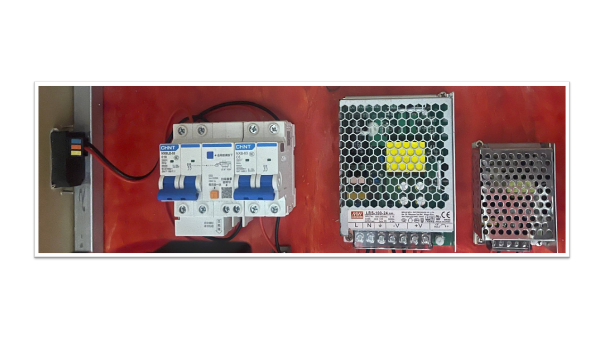
ភ្ជាប់ទៅ WiFi
បើកកុំព្យូទ័ររបស់អ្នក សូមបើកការកំណត់ WiFi រួច Edit Network Band to 2.4GHz។
SSID:DP · ពាក្យសម្ងាត់: DP180322
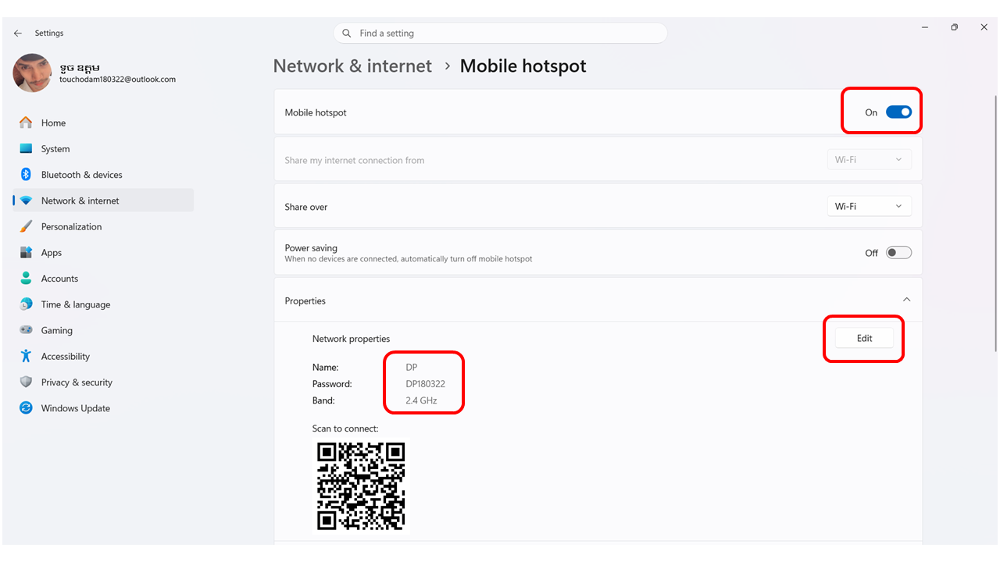
បើកកម្មវិធីគេហទំព័រ
បើកកម្មវិធីរុករកណាមួយ (Chrome, Safari, Edge) ហើយបញ្ចូលអាសយដ្ឋាន IP ដែលបង្ហាញនៅលើ Serial Monitor ជាធម្មតាដូចជា 192.168.4.1 ឬ IP នៅក្នុង Mobile Hotspot។
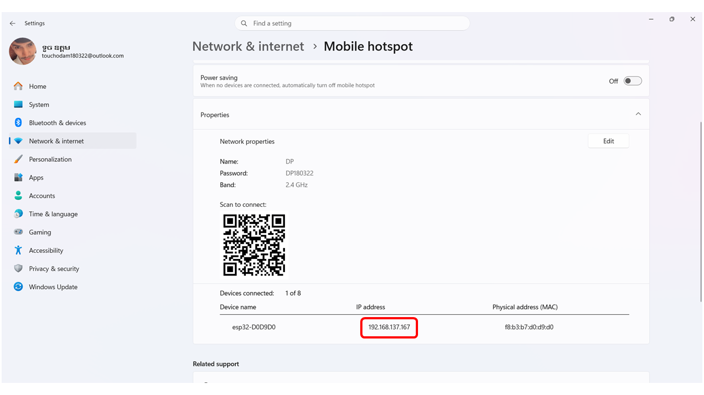
ការចាប់យកថ្នាំ
ស្វែងរក បន្ថែម និងចាប់យកថ្នាំ
ស្វែងរកថ្នាំ
វាយឈ្មោះថ្នាំនៅក្នុងប្រអប់ស្វែងរក។ បញ្ជីថ្នាំដែលត្រូវនឹងនឹងបង្ហាញនៅពេលអ្នកវាយ។ អ្នកក៏អាចវាយ All Medicine ដើម្បីបន្ថែមថ្នាំទាំង ៤០ ក្នុងពេលតែមួយ។
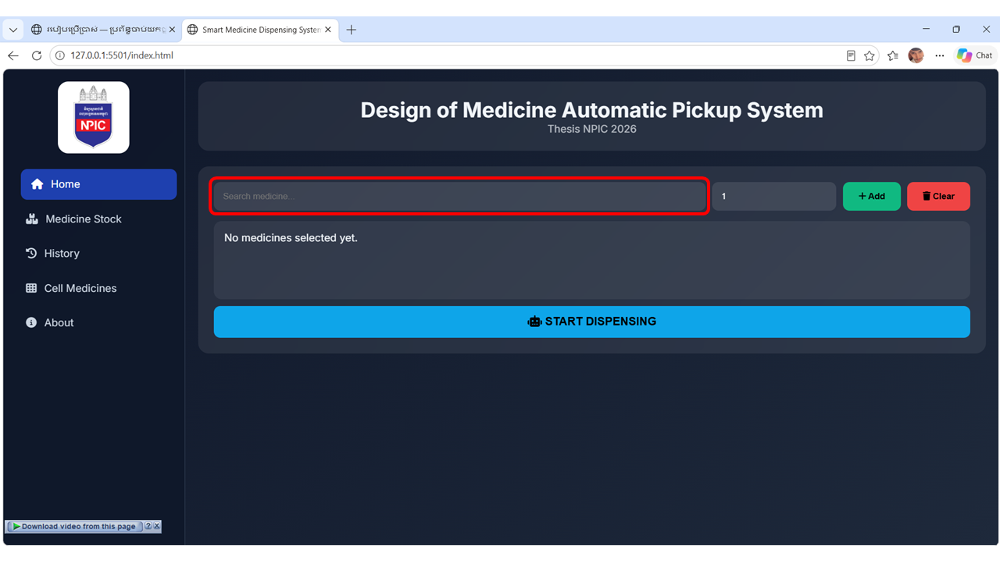
កំណត់បរិមាណ
បញ្ចូលចំនួនថ្នាំដែលអ្នកចង់ចាប់។ តម្លៃលំនាំដើមគឺ ១។ ចំនួនអតិបរមាត្រូវបានកំណត់ដោយស្តុកបច្ចុប្បន្ន។
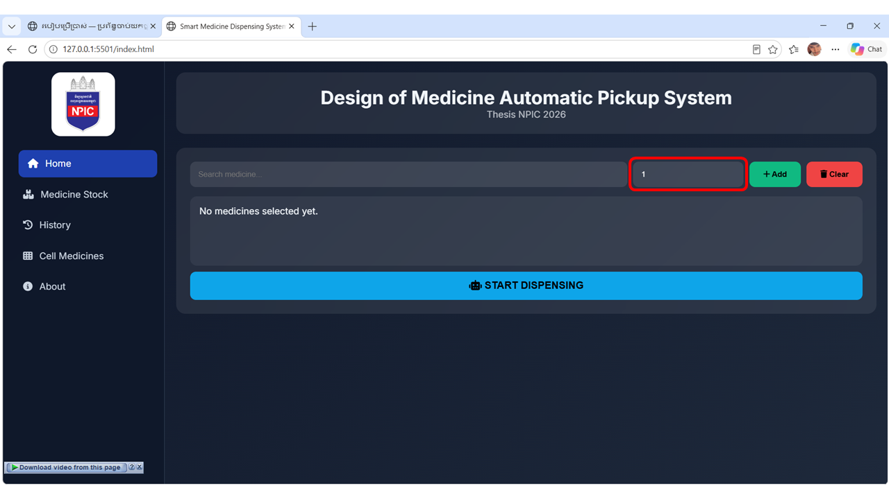
ចុច Add
ថ្នាំត្រូវបានបន្ថែមទៅបញ្ជីកម្ម៉ង់បច្ចុប្បន្ន។ ធ្វើម្តងទៀតជំហាន ១–៣ ដើម្បីបន្ថែមថ្នាំផ្សេងៗទៀត។
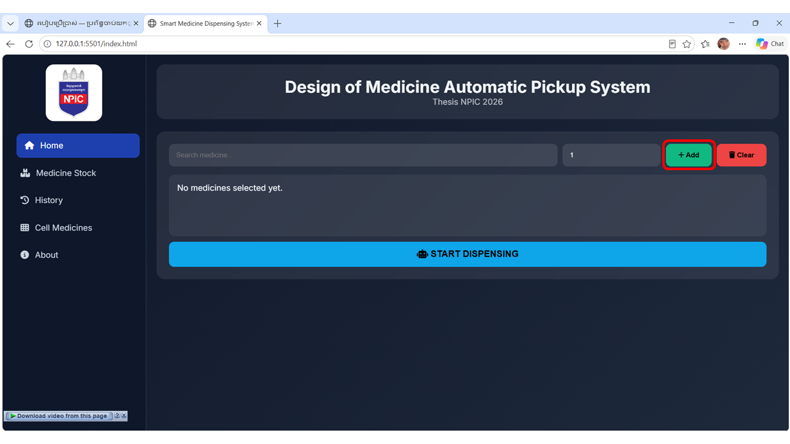
ចុច START DISPENSING
ម៉ាស៊ីនចាប់ផ្តើមចាប់ថ្នាំ។ ផ្ទាំងបង្ហាញថាថ្នាំណាកំពុងត្រូវចាប់ ព្រមទាំងបង្ហាញលេខរាប់ (ឧ. ១/៣) សម្រាប់ធាតុនីមួយៗ។
ការចាប់ថ្នាំនីមួយៗចំណាយពេលប្រហែល ៥ – ១៦ វិនាទី – ដៃម៉ាស៊ីនធ្វើដំណើរទៅ ចាប់ថ្នាំ ហើយត្រឡប់មកទីតាំងដើមវិញ។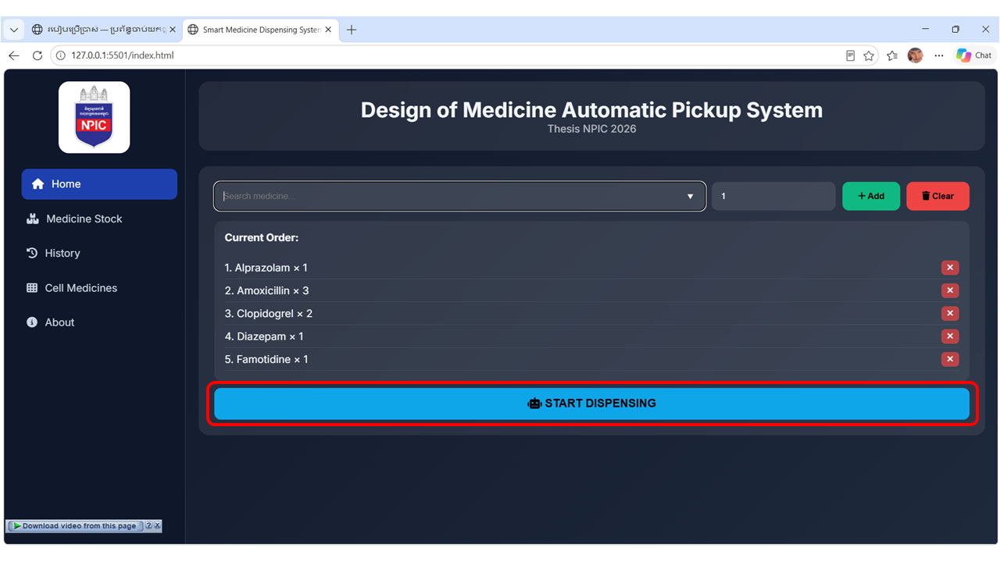
ម៉ាស៊ីនកំពុងដំណើរការ
បង្ហាញពីការចាប់ថ្នាំដល់ណា
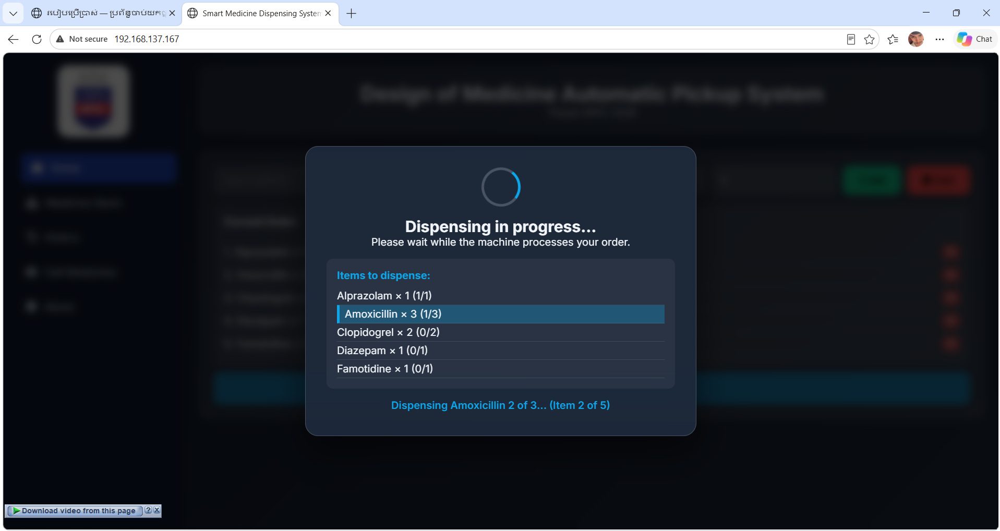
រង់ចាំផ្ទាំងសេចក្តីសង្ខេប
ពេលបញ្ចប់ តារាងសង្ខេបបង្ហាញចំនួនថ្នាំដែលចាប់បានសរុប ថ្នាំដែលបរាជ័យ និងបរិមាណសរុប។ ផ្ទាំងនេះបិទដោយស្វ័យប្រវត្តិបន្ទាប់ពី ៦ វិនាទី។
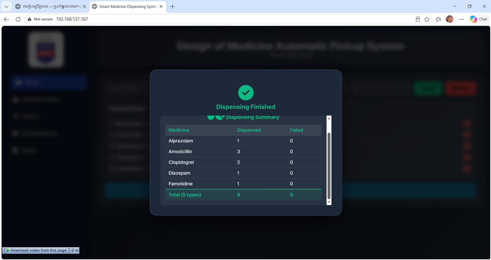
ការគ្រប់គ្រងស្តុកថ្នាំ
ចូលជា Admin ដើម្បីកែឈ្មោះ និងចំនួន
បើកទំព័រស្តុក
ពី List ចុច ស្តុកថ្នាំ។ អ្នកនឹងឃើញតារាងថ្នាំទាំង ៤០ ជាមួយចំនួនស្តុកបច្ចុប្បន្ន។ ជួរដែលមានស្តុកតិចជាង ៣ នឹងបង្ហាញជាពណ៌ក្រហម។
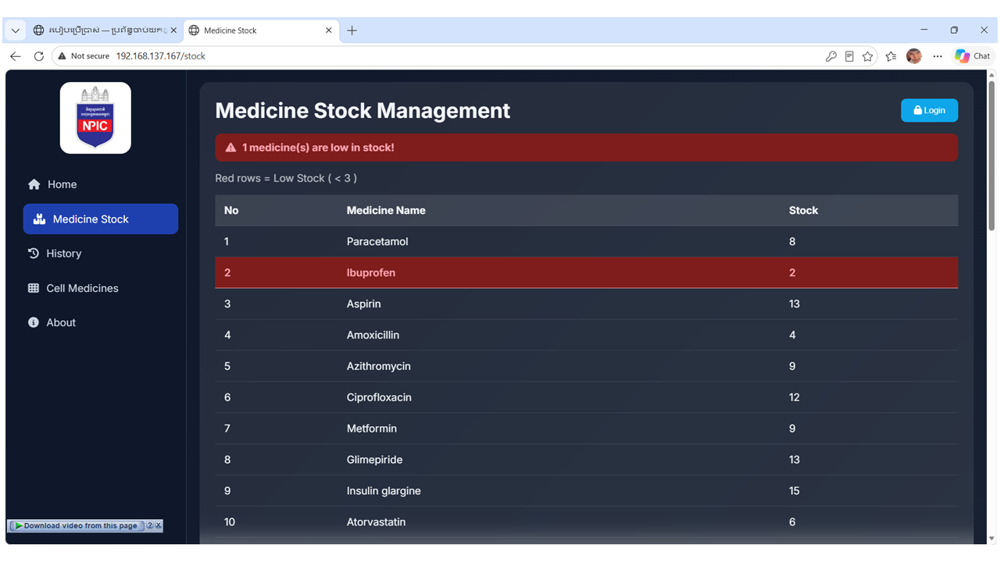
ចូលប្រព័ន្ធ
ចុចប៊ូតុង Login នៅជ្រុងខាងស្តាំខាងលើនៃផ្ទាំង។
ឈ្មោះអ្នកប្រើ:admin · ពាក្យសម្ងាត់: admin123
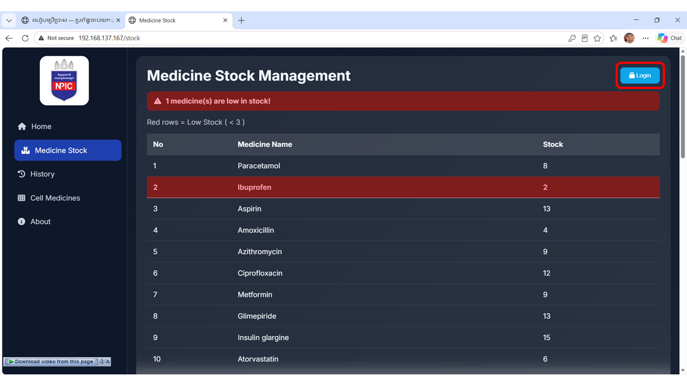
ចូលទៅរបៀប Edit
បន្ទាប់ពីចូលរួច ប៊ូតុង Edit នឹងបង្ហាញឡើង។ ចុចវាដើម្បីធ្វើឱ្យជួរឈរឈ្មោះ និងស្តុកអាចកែបាន។
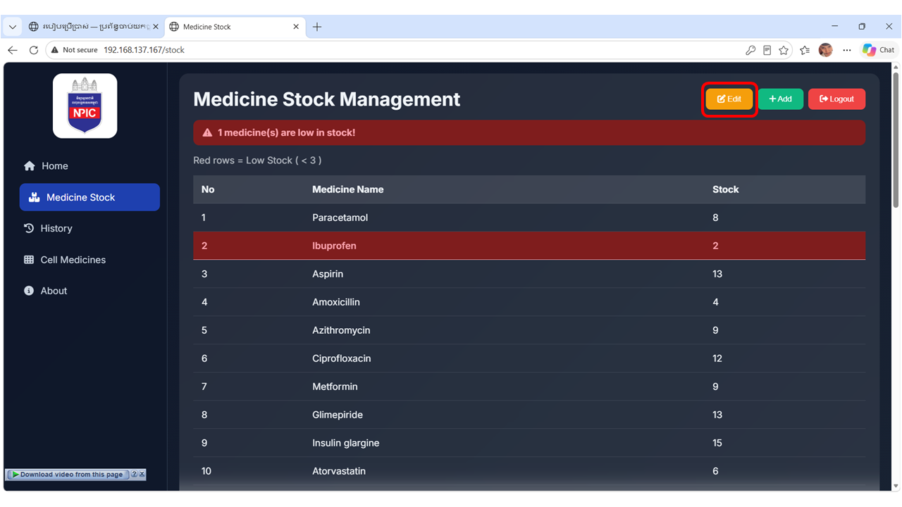
បន្ថែមស្តុក (បន្ថែម)
ប្រើប៊ូតុង Add ដើម្បីបង្កើនស្តុកថ្នាំយ៉ាងរហ័សដោយមិនចាំបាច់កែតារាង។ ជ្រើសរើសថ្នាំ បញ្ចូលចំនួន ហើយចុច Add Stock។
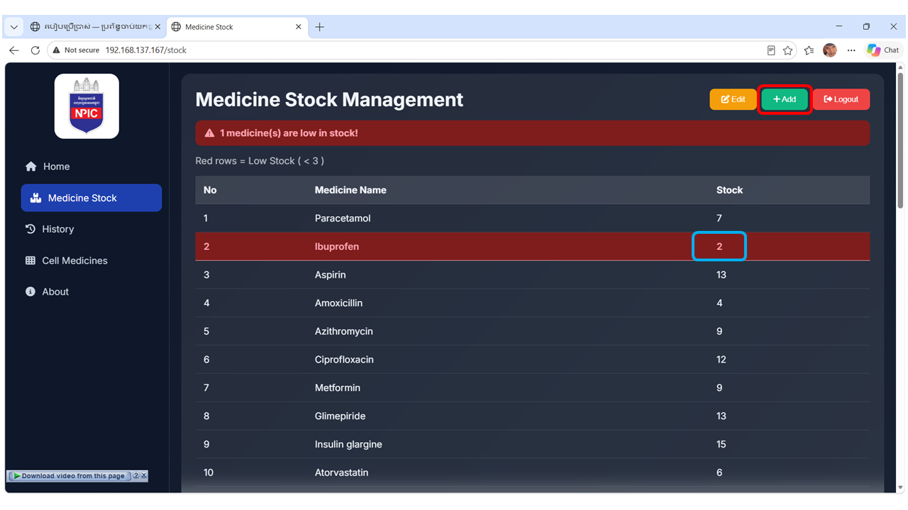
ការមើលប្រវត្តិនៃការចាប់ថ្នាំ
ការកម្ម៉ង់ដែលបានបញ្ចប់ និងបរាជ័យត្រូវបានកត់ត្រាទាំងអស់
បើកទំព័រប្រវត្តិ
ចុច ប្រវត្តិ នៅក្នុង Sidebar។ អ្នកនឹងឃើញតារាងនៃការកម្ម៉ង់កន្លងមកទាំងអស់ ថ្មីបំផុតនៅខាងលើ — បង្ហាញកាលបរិច្ឆេទ/ពេលវេលា ធាតុ និងស្ថានភាព។
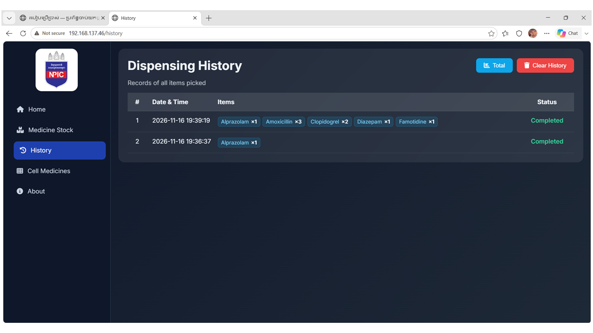
ទិដ្ឋភាពតារាងថ្នាំ
មើលទីតាំងថ្នាំនីមួយៗឱ្យបានច្បាស់
បើកតារាងថ្នាំ
ចុច តារាងថ្នាំ នៅក្នុង Sidebar។ អ្នកនឹងឃើញក្រឡាចត្រង្គ ៥×៨ បង្ហាញកន្លែងថ្នាំទាំងអស់។
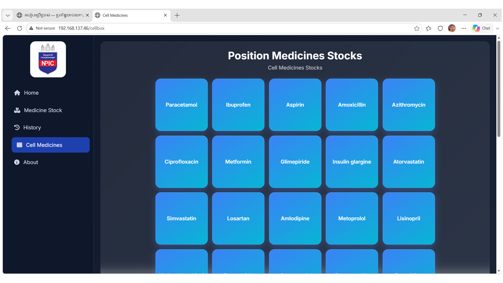
About
មើលទីតាំងថ្នាំនីមួយៗឱ្យបានច្បាស់
បើកតារាងថ្នាំ
ចុច តារាងថ្នាំ នៅក្នុង Sidebar។ អ្នកនឹងឃើញ ៥×៨ បង្ហាញកន្លែងថ្នាំទាំងអស់។
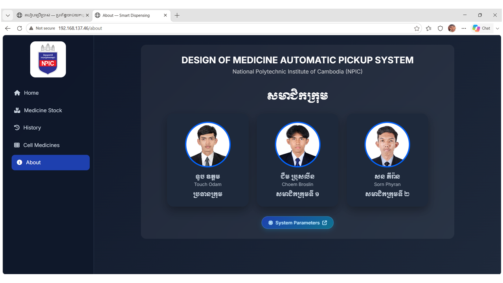
សំណួរញឹកញាប់
ចម្លើយរហ័សចំពោះបញ្ហាទូទៅ
ម៉ាស៊ីនមិនធ្វើចលនាពេលខ្ញុំចុច START DISPENSING
ខ្ញុំឃើញ "Insufficient stock" សម្រាប់ថ្នាំមួយ
ធ្វើដូចម្តេចដើម្បីបន្ថែមថ្នាំដូចគ្នាច្រើនជាង ១?
ការចាប់ថ្នាំត្រូវបានរំខាន — តើកម្ម៉ង់ត្រូវបានរក្សាទុកទេ?
ធ្វើដូចម្តេចដើម្បីប្តូរឈ្មោះ WiFi ឬពាក្យសម្ងាត់?
const char* ssid = "DP" និង const char* password = "DP180322"។ Upload Sketch ដែលបានធ្វើបច្ចុប្បន្នភាពទៅ ESP32 ហើយ Flash ឡើងវិញ។